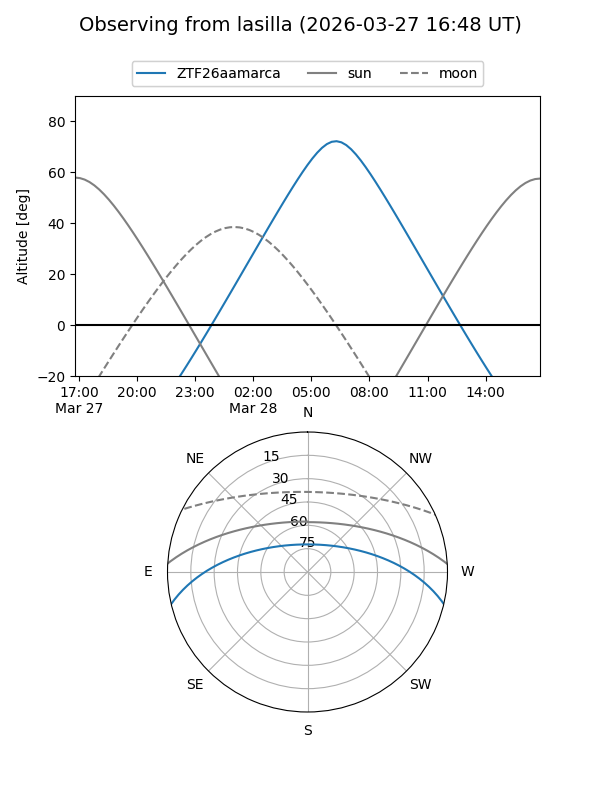
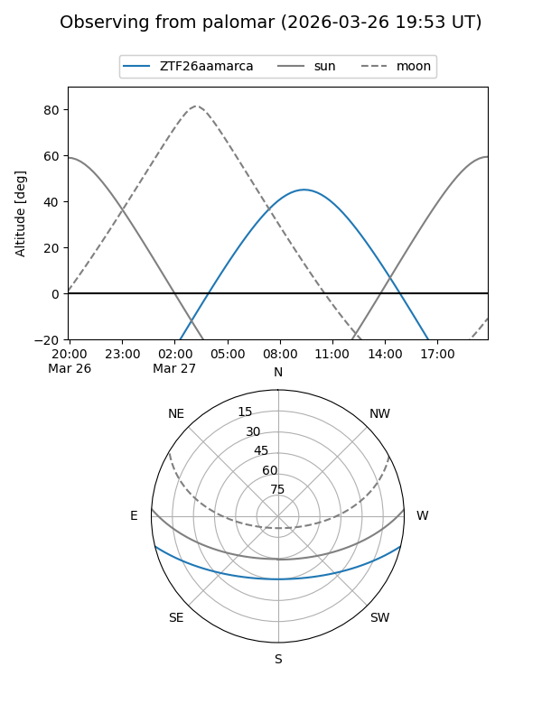

ZTF26aamarca
Target ZTF26aamarca at 2026-03-27 11:18
Aliases and brokers:
FINK: link
Lasair: link
ALeRCE: link
alt names
ZTF26aamarca (ztf,fink_ztf)
Coordinates:
equatorial (ra, dec) = 208.5318,-11.37759
equatorial (HMS+DMS) = 13:54:07.64,-11:22:39.32
galactic (l, b) = (326.5385,+48.59966)
Flags:
Photometry:
last ztfg=17.14
1 ztfg detections
Lightcurve
Visibility


Additional plots